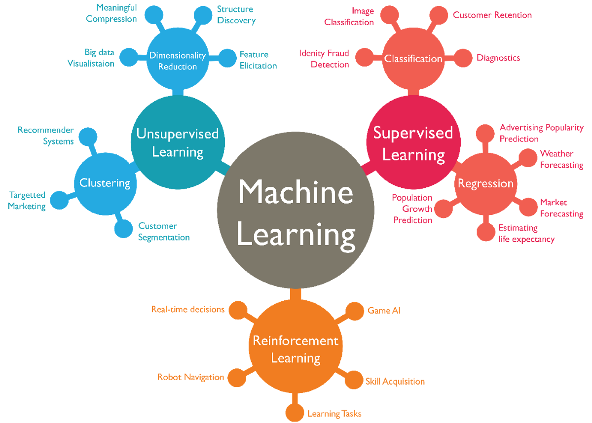
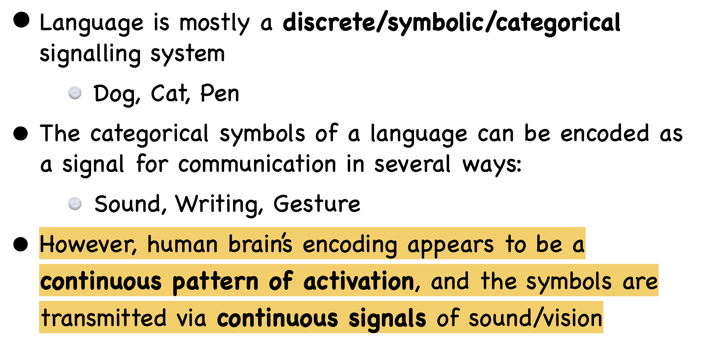
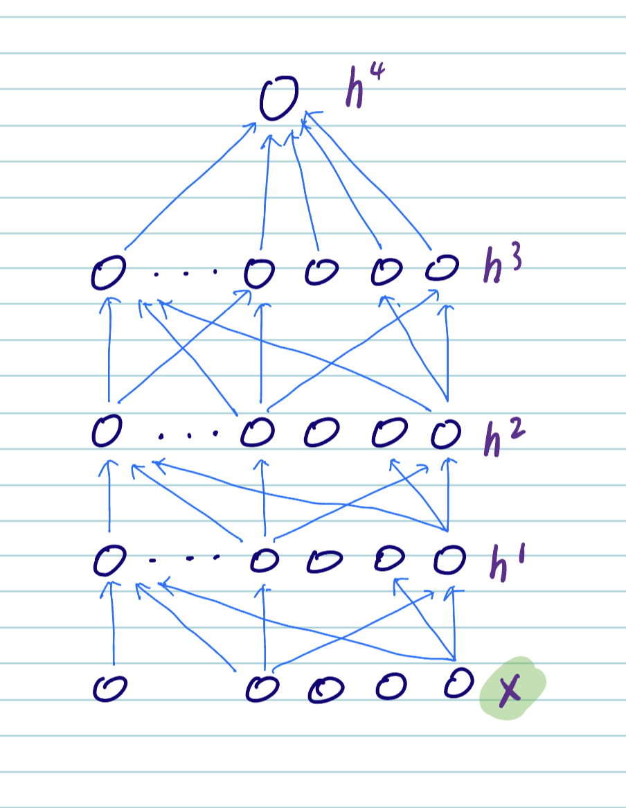
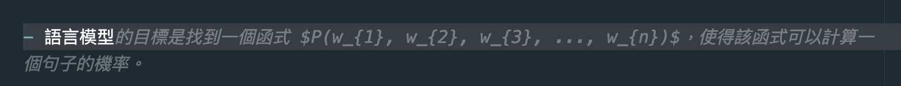

Week 9
機器學習
- 希望機器從餵給它的資料中學到一個預測方法。數學上地說，就是學到一個函式。
機器學習概覽

機器學習的種類
按照所預測輸出的類型爲類別 (label) 或數值 (real-valued) 之不同，可分為分類 (classification) 、迴歸 (regression) 、生成式學習 (Generative Learning) 等。
按照學習的行爲可分
監督式學習 (Supervised/Predictive learning) ：給定標準答案，學輸入與輸出的映射 (mapping)。
非監督式學習 (Unsupervised/Descriptive learning) ：給定輸入，學輸入的模式分佈 (distribution)。
強化式學習 (Reinforcement learning) ：給定獎勵或懲罰，學如何行動或行為 (how to act ot behave)。
Parametric vs. Non-parametric
- Parametric model：參數化的模型，參數的數目是固定的，模型的複雜度是固定的。
- Non-parametric model：非參數化的模型，參數的數目是不固定的，隨着資料大小而不同。
生成式學習 (Generative Learning)
a.k.a. 結構化學習 (structured learning)
- 結構化學習是指輸出爲一個結構化的物件，如語音辨識、機器翻譯、語言模型等。
機器學習
選擇 (候選) 的函式集合
決定評測函式的方法 (e.g., loss function)
找最好的函式 (最佳化 optimization)
chatGPT (貌似) 將生成式學習解成分類問題。
我們用一個例子來說明
假設我們的任務是
Linear Regression
- 線性回歸是一種迴歸模型，它假設輸入與輸出之間存在線性關係。
- 線性回歸的目標是找到一條線，使得所有點到該線的距離之和最小。
- 線性回歸的參數是線的斜率與截距。
- 線性回歸的損失函數是均方誤差 (Mean Squared Error, MSE)。
- 線性回歸的最佳化方法是梯度下降法 (Gradient Descent)。
Logistic Regression
- 邏輯回歸是一種分類模型，它假設輸入與輸出之間存在線性關係。
語意分佈表徵
令人困擾的語言表徵問題
Natural Language as (discrete) symbols or (continuous) signals?

Embeddings
- 一種表徵方法，將一個物件用一個向量表徵。例如，word embeddings 將一個詞用一個向量表徵，該向量的每個元素代表該詞的某個特徵。
之前做法
one-hot encoding
tf-idf (term frequency-inverse document frequency)
詞袋假說 bag-of-words (BoW) assumption： 詞的順序 (order)、語境 (context) 不重要，只看詞的出現次數。
ngram 語言模型
用深度學習學習表徵 (Representation Learning)
自動學習特徵 (features) 或表徵 (representations)。
從輸入 \(x\) ，利用多層神經網路學習多層次表徵 (\(h^{1}, h^{2}, h^{3}, ..\)) 以及最終的輸出 \(h^{4}\)。

\(x\) 可以是 sound, pixels, words, etc. 深度學習在 speech, vision, language 上取得了很大的進展。
語言模型 (Language Model)
- 語言模型是一個函式，它可以計算一個句子的機率。
